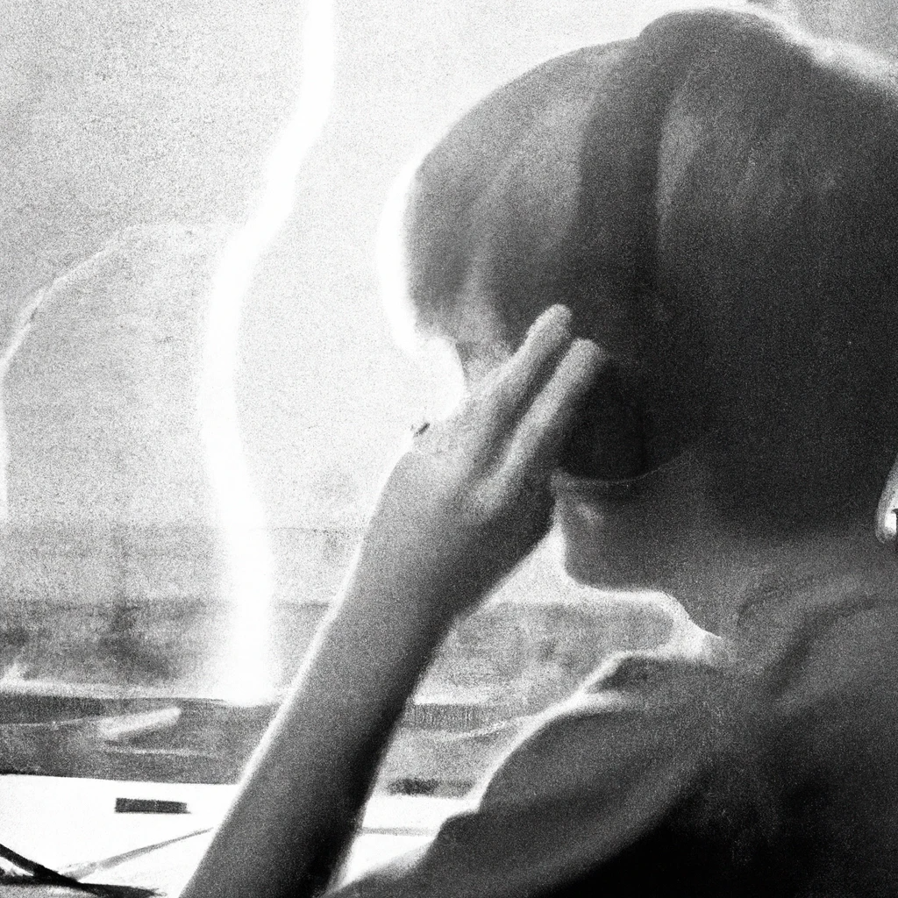
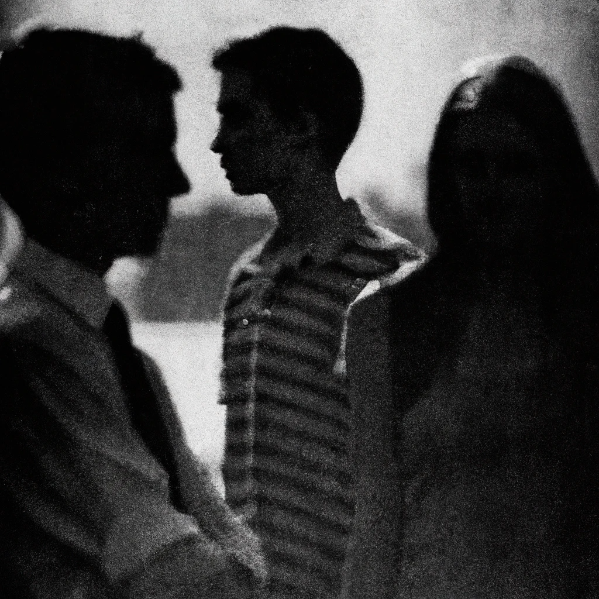
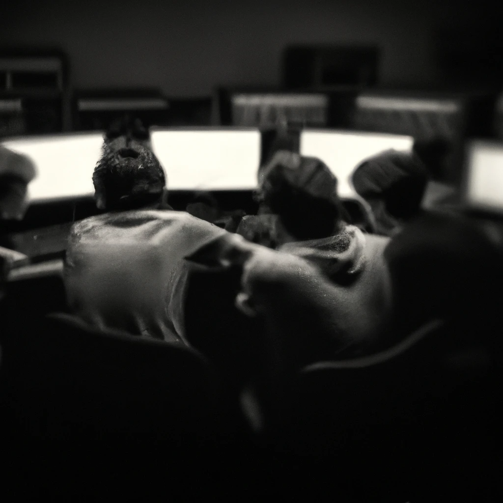
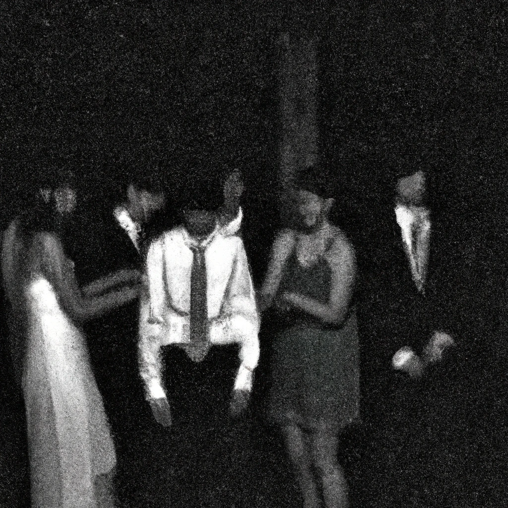
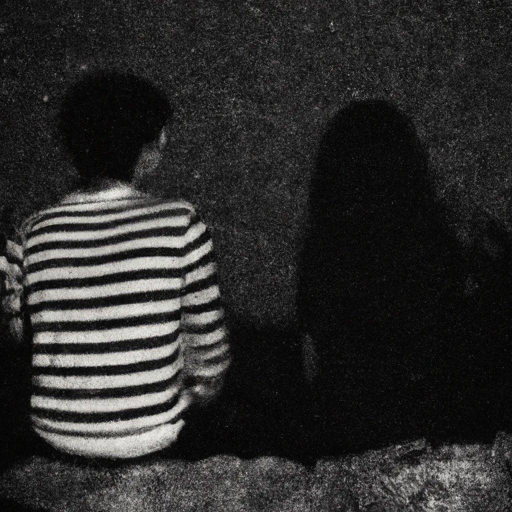

2019 - Present
Beast of Burden | 2019-04-16 00:09
This enigmatic encounter cast an enduring shadow upon my narrative. It birthed an enigma, a puzzle with missing pieces, persisting like an unsolved riddle. The echoes of uncharted emotions continue to ripple through the ever-evolving fabric of my existence, reminding me of the profound complexities of human connections and the cryptic hopeless questions they leave in their wake.
Welcome to the Black Parade | 2019-10-23 00:42
Within this clandestine fold, my ardor for the arcane dimension of temporal manipulation burgeoned like a riddle unfolding its secrets. It was as though I had unearthed a profound sense of belonging, a tether to something far more cryptic than the mundane.
Closing Time | 2020-01-15 11:00
The hallowed halls of learning transformed into a purgatory of sorts. Each day, I found myself trapped in the stifling confines of the classroom, counting down the hours until the liberating chime of dismissal. The purpose behind my presence there remained shrouded in uncertainty, like a riddle with no solution.
Comfortably Numb | 2020-04-19 00:22
What truly tugged at my heartstrings was the somber realization that our cherished in-person gatherings with a certain group of kindred spirits would remain a distant dream. This year was meant to be the grand crescendo, the culmination of our shared aspirations, and the prospect of it slipping away left me with a sense of melancholy.
Self Love | 2021-07-24 01:34

In this metropolis of endless possibilities, I grappled with the weight of solitude, a solitary star amidst a sprawling galaxy. It was a period when the world's vibrancy served only to accentuate my own sense of desolation, a stark reminder that sometimes, even in the most promising of places, the shadows of despair can loom large.
Don't Stop Believin'| 2022-01-25 00:34
In the labyrinth of life, I realized that the journey isn't always linear, and the choices we make may lead us to unexpected places. It was a lesson in the intricacies of the heart, a reminder that sometimes, the initial path we tread might have been the right one after all.
Get me out| 2023-10-08 00:34
Maybe its just not that deep.